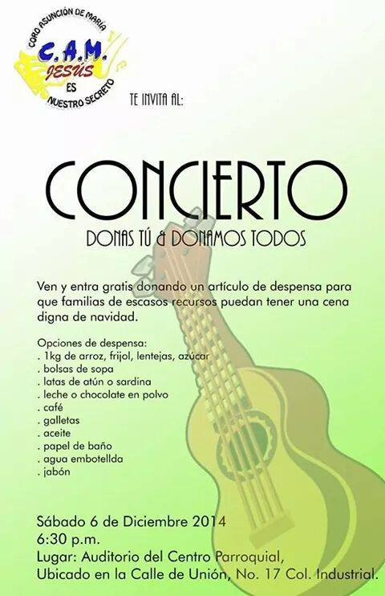
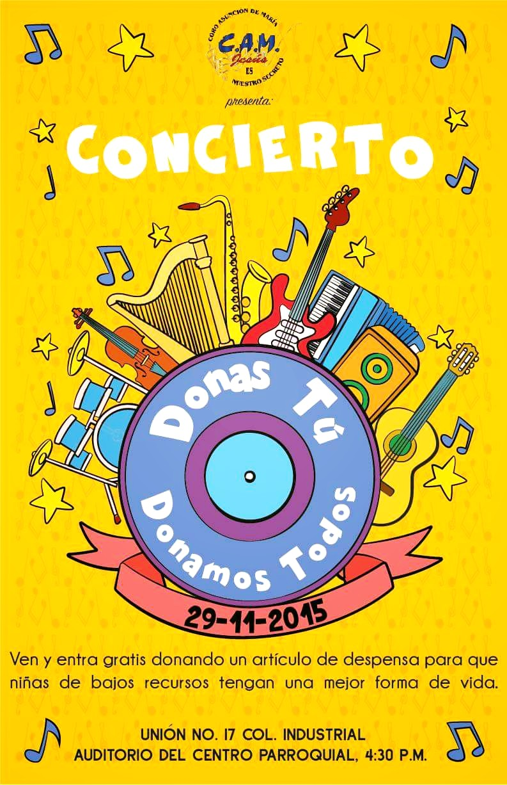
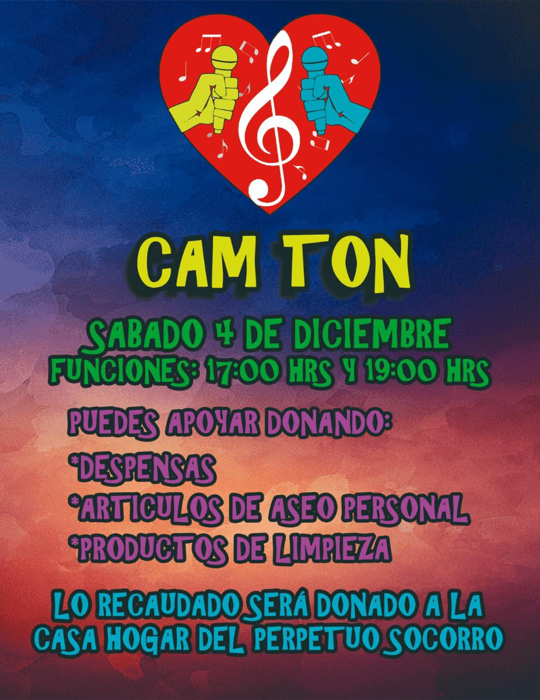
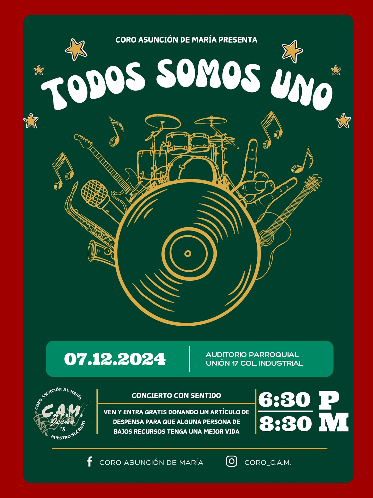

Parroquia Asunción de María
Industrial, Gustavo A. Madero, Ciudad de México
Industrial, Gustavo A. Madero, Ciudad de México
El 6 de diciembre de 2014, el Coro Asunción de María organizó su primer concierto con causa que se tiene registro "Donas Tú, Donamos Todos", celebrado en el auditorio del Centro Parroquial Asunción de María.
Este evento tuvo como propósito recolectar despensas para las familias de bajos recursos de la comunidad de Tepozotlán, Estado de México, México. Como costo de entrada, se invitó a cada asistente a llevar artículos de despensa, origen del nombre del evento.
El 29 de noviembre de 2015, el Coro Asunción de María organizó el concierto con causa "Donas Tú, Donamos Todos", celebrado en el auditorio del Centro Parroquial Asunción de María.
Este evento tuvo como propósito recolectar despensas para las niñas de la Casa Hogar del Perpetuo Socorro. Como costo de entrada, se invitó a cada asistente a llevar artículos de despensa, ropa en buen estado y artículos de despensa, origen del nombre del evento.
El 4 de diciembre de 2021, el Coro Asunción de María organizó el concierto con causa "CAMTON", celebrado en el salón del Centro Parroquial Asunción de María.
Este evento tuvo como propósito recolectar despensas para la Casa Hogar del Perpetuo Socorro. Como costo de entrada, se invitó a cada asistente a llevar artículos de despensa, de aseo personal y/o productos de limpieza. Los cupos fueron limitados habiendo 3 funciones para evitar algún tipo de contagio por el virus del COVID-19, así llevando a cabo el concierto con todas las medidas sanitarias necesarias.
El concierto fue de música variada, interpretando canciones como:
-"Y Lo Busqué" de Ana Bárbara
-"Causa y Efecto" de Paulina Rubio
-"Vida de Rico" de Camilo
-"Te Olvidé" de Alejandro Fernández
-"Perdón, Perdón" de Ha-Ash ft. Los Ángeles Azules
-"El Amor Nunca Pasa De Moda" de Los Caligaris

El 7 de diciembre de 2024, el Coro Asunción de María organizó el concierto con causa "Todos Somos Uno", celebrado en el auditorio del Centro Parroquial Asunción de María.
Este evento tuvo como propósito recolectar despensas para las familias necesitadas de la comunidad de la Asunción, basándose en datos proporcionados por la Operación María de Nazareth.
El concierto fue un tributo al dueto Jesse & Joy, presentando una selección de 10 de sus éxitos.




